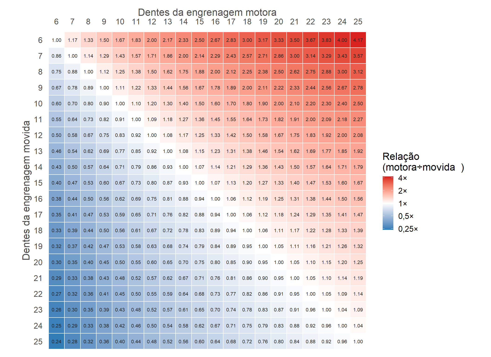
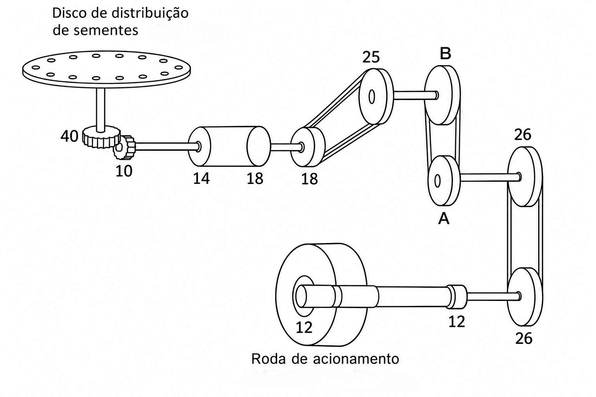

Mecanização agrícola:
Cálculos de densidade de semeadura e regulagens
Gustavo Frosi
Instituto Federal do Paraná
Curso Superior em Engenharia Agronômica
30 de outubro de 2026
Exercícios
1 - Cultivo de trigo: quero uma população de 3500000 plantas ha-1, com espaçamento entre linhas de 17 cm, PMS de 44 g e germinação de 93%. Qual a quantidade de sementes (kg) que devo largar por metro? Qual a quantidade de sementes (kg) por hectare?
Resultado:
\[ Q_{metro}= (\frac{100}{0,17})*100 = 58823.53~m~(lineares) \]
\[ Pop = \frac{ 3500000}{0.93}= 3763441~plantas~ha^{-1} \]
\[ NS = \frac{3763441}{58823.53} = 63.9785~plantas~m^{-1} \]
\[ NS_{peso}= \frac{63.9785~plantas~m^{-1} * 44~g}{1000} = 2.82~g~m^{-1} \]
\[ Peso_{total}= \frac{3763441 * 44~g}{1000} = \frac{ 165591.4}{1000} = 165.59~kg~ha^{-1} \]
Exercícios
2 - Cultivo de milho: quero uma população de 80000 plantas ha-1, com espaçamento entre linhas de 45 cm e germinação de 95%. Qual a quantidade de sementes que devo largar por metro? Qual a quantidade de sementes por hectare?
Resultado:
\[ Q_{metro}= (\frac{100}{0.45})*100 = 22222.22~m~(lineares) \]
\[ Pop = \frac{80000}{0.95}= 84210.53~plantas~ha^{-1} \]
\[ NS = \frac{84210.53}{22222.22} = 3.789~plantas~m^{-1} \]
Exercícios
3 - Cultivo de soja: quero uma população de 300000 plantas ha-1, com espaçamento entre linhas de 45 cm, germinação de 98% e pureza de 99%. Qual a quantidade de sementes que devo largar por metro? Qual a quantidade de sementes por hectare?
Resultado:
\[ Q_{metro}= (\frac{100}{0.45})*100 = 22222.22~m~(lineares) \]
\[ Pop_{G} = \frac{300000}{0.98}= 306122.4~plantas~ha^{-1} \]
\[ Pop_{P} = \frac{306122.4}{0.99}= 309214.5~plantas~ha^{-1} \]
\[ NS = \frac{309214.5}{22222.22} = 13.914~plantas~m^{-1} \]
Exercícios
4 - Cultivo de soja:
Temos um conjunto (trator-semeadora) com engrenagem motora de 14 dentes e engrenagem movida de 19 dentes. A deposição de sementes é de 15 sementes m-1, com disco de 92 furos. A semente utilizada possui vigor de 88%.
A recomendação é que tenhamos 13,5 plantas viáveis a cada metro, com espaçamento de 45 cm, usando um disco de 62 furos.
Resultado:
\[ S_{metro}= (\frac{13.5}{0.88}) = 15.34~sementes~m^{-1} \]
Discos:
\[ \frac{92~furos}{62~furos} = \frac{15~sementes}{x} \quad\Rightarrow\quad x = \frac{62 \cdot 15.34}{92} = 10.1087~sementes~m^{-1} \]
Exercícios
4 - Cultivo de soja:
Temos um conjunto (trator-semeadora) com engrenagem motora de 14 dentes e engrenagem movida de 19 dentes. A deposição de sementes é de 15 sementes m-1, com disco de 92 furos. A semente utilizada possui vigor de 88%.
A recomendação é que tenhamos 13,5 plantas viáveis a cada metro, com espaçamento de 45 cm, usando um disco de 62 furos.
Resultado:
Relação de engrenagens:
\(14/19 = 0,7368\)
\[ \frac{0.7368}{x} = \frac{10.1087~sementes}{15.34~sementes} \quad\Rightarrow\quad x = \frac{0.7368 \cdot 15.34}{10.1087} = 1.118 \]
\[ Pop_{alvo} = 13.5 * 22222.22 = 300000~plantas~ha^{-1} \]
Relações de engrenagens

Exercícios
4 - Cultivo de soja:
Agora, o conjunto já está regulado para distribuir 15,34 sementes m-1, considerando todas as configurações de disco, espaçamento e vigor. No entanto, queremos saber se a operação está sendo bem conduzida. Para isso, 5 amostras foram coletadas durante a operação para verificar se a quantidade de sementes depositada corresponde à regulada.
| Distância | Sementes | Distância entre sementes |
|---|---|---|
| 100 cm | 13 | 7,69 cm |
| 100 cm | 14,2 | 7,04 cm |
| 100 cm | 15,2 | 6,58 cm |
| 100 cm | 15 | 6,67 cm |
| 100 cm | 15,3 | 6,53 cm |
Sementes por metro:
\[ \bar{x} = \frac{13 + 14{,}2 + 15{,}2 + 15 + 15{,}3}{5} = 14{,}54 \]
\[ s = \sqrt{\frac{\sum_{i=1}^{n}(x_i-\bar{x})^2}{n-1}} = 0{,}96 \]
\[ CV = \frac{s}{\bar{x}} \times 100 = \frac{0{,}9633}{14{,}54} \times 100 = 6{,}63\% \]
E a distribuição dessas sementes nos 100 cm?
Exercícios
4 - Cultivo de soja:
Consideramos que a quantidade de sementes depositada a cada metro está dentro do aceitável em nosso exemplo. No entanto, agora queremos observar se a distribuição entre as sementes está boa. Para isso, mais 15 medidas de distância entre sementes foram coletadas. O ideal seria observar uma distância de 6,52 cm entre cada semente, mas observamos as seguintes medidas:
- Amostra 1: 6,37; 6,25; 6,55; 6,50; 6,59.
- Amostra 2: 6,40; 6,41; 6,43; 6,40; 6,43.
- Amostra 3: 6,52; 6,50; 6,50; 6,51; 6,54.
Qual é a média, o desvio-padrão, o CV da amostra ou de cada amostra? Além da precisão e da acurácia da operação.
Teste
Teste 1
5 - Em busca de tempo para continuar a leitura do livro A vida secreta das árvores, um agrônomo quer regular uma semeadora para a cultura da soja e determinar quanto tempo levará para fazer a operação de semeadura. O agrônomo/pequeno produtor possui 15 hectares, dos quais 12,5 serão cultivados com soja.
- A semeadora do agrônomo tem largura de trabalho de 4,5 m, e ele sempre faz a semeadura a uma velocidade de 5,5 km h-1. No ano passado, ele fez algumas anotações sobre o tempo gasto na operação:
- Tempo efetivo: ~303 minutos;
- Manobras: ~70 minutos;
- Abastecimento: ~60 minutos.
- Neste ano, a ideia é ter 250 mil plantas por hectare. Para isso, ele conta com uma semeadora de 10 linhas, que tem boa distribuição, mas, devido à idade do implemento, recomenda-se adicionar 10% de sementes como margem de segurança. A semente disponível na cooperativa possui PMS de 200 g e germinação de 97%, mas apresenta 2% de impurezas devido a problemas na embalagem.
Quantas sementes por metro o agrônomo deve observar para ter o estande de plantas desejado? Além disso, qual é a quantidade de sementes necessária para toda a área?
Também, quais são as capacidades de campo teórica e efetiva, a eficiência de campo e a capacidade de manipulação? Em quanto tempo o agrônomo poderá voltar a ler seu livro?
Teste 2
6 - Um agricultor deseja cultivar trigo em uma área de 42 ha. Sabe-se que a densidade de semeadura recomendada é de 125 kg ha-1 e de adubo 400 kg ha-1. Para realizar o trabalho, o agricultor possui um conjunto semeadora/adubadora com as seguintes características: 13 linhas, perímetro da roda motriz que transmite os movimentos 2,43 m, distância entre linhas de 0,17 m. Considere que a semente apresenta 95% de germinação 98% de sobrevivência e 90% de pureza. Pergunta-se:
Quais serão as quantidades (kg) de adubo e de sementes que deverão cair, por linha, se girarmos a roda motriz da semeadora 15 vezes? (Considere 5% de patinagem).
Se o agricultor coletar o adubo e as sementes de todas as linhas, quais serão as quantidades totais de adubo e de sementes que deverão cair? (Considerando os mesmos 15 giros da roda).
Quantos kg de sementes e de adubo este agricultor necessitará comprar para adubar e semear toda a sua propriedade?
A eficiência da operação é de 85 %, com isso qual valor podemos estimar para a capacidade de campo efetiva que ele pode ter?
Considerando que a capacidade de manipulação dessa operação é de 234,8 kg h-1 de sementes, qual a velocidade de cultivo?
Teste 3
7 - Considere a seguinte situação: Cultivo de milho, com população final de 67.000 plantas ha-1; espaçamento 0,8 m; germinação 99%; sobrevivência 95%.
Considere também, que, na regulagem da máquina percorreu-se 50m (portanto nessa regulagem a semeadora não está suspensa, ou seja, está sendo regulada no solo onde será realizada a semeadura). Nessa distância foram coletadas em média 213 sementes em cada linha da semeadora.
Qual é o número desejado de sementes por metro linear?
Qual é o número coletado de sementes por metro linear?
Considere que a relação existente na coleta das sementes era 0,82. Qual a relação necessária para que seja atingido o número desejado de sementes? Quais as engrenagens poderiam ser utilizadas para que se atinja essa relação?
Qual a acurácia da operação?
Teste 4
8 - Considere a imagem abaixo e os dados:
- Roda de acionamento com 0,48 metros de diâmetro;
- Disco de distribuição com 92 furos.

Qual é relação necessária para a distribuição de 10 sementes por metro linear? Qual o número de dentes das engrenagens A e B?
Teste 5
9 - Um produtor vai semear soja em uma área de 30 ha, com espaçamento entre linhas de 0,5 m. A população final desejada é de 280 mil plantas ha-1. A semente apresenta germinação de 90%, sobrevivência (emergência a campo) de 92%, pureza de 98% e PMS de 180 g.
Quantas sementes por metro linear devem ser depositadas?
Qual é a dose de semeadura em kg ha-1?
Qual é a quantidade total de sementes (kg) necessária para os 30 ha?
Teste 6
10 - Uma propriedade possui 80 ha para semeadura de milho. A semeadora tem 6 linhas espaçadas em 0,9 m e trabalha a 6 km h-1, com eficiência de campo de 75%. O consumo médio do trator durante a operação é de 6 L h-1.
Quais são as capacidades de campo teórica e efetiva (ha h-1)?
Quantas horas serão necessárias para semear toda a área? Se a jornada é de 8 h por dia, quantos dias de trabalho?
Qual será o consumo total de combustível na operação?
Teste 7
11 - A roda motriz de uma semeadora possui 0,60 m de diâmetro. Para determinar a patinagem, o operador marcou a roda e a fez girar 20 voltas com a máquina em operação no solo, medindo uma distância percorrida de 34,5 m. O sistema de transmissão é regulado para que o disco dosador deposite 24 sementes por volta da roda motriz.
Qual é o perímetro da roda e a distância teórica percorrida em 20 voltas?
Qual é a patinagem (%)?
Qual é o número de sementes por metro linear teórico (sem patinagem) e o real (com patinagem)?
Teste 8
12 - Na regulagem de uma semeadora de soja (espaçamento de 0,45 m), deseja-se uma população final de 300 mil plantas ha-1, com germinação de 85% e sobrevivência de 90%. A máquina percorreu 30 m e foram coletadas as sementes de 4 linhas, obtendo-se 520, 540, 515 e 525 sementes, respectivamente.
Qual é o número desejado de sementes por metro linear?
Qual é o número médio coletado de sementes por metro linear?
Qual é a acurácia da operação (%)? Precisa de novo ajuste?
Qual é o coeficiente de variação (%) entre as linhas?
Teste 9
13 - Em uma área de 50 ha de milho, com espaçamento de 0,8 m, será aplicado no sulco de semeadura o formulado 08-28-16 (N-P2O5-K2O) na dose de 350 kg ha-1.
Quantos gramas de adubo devem cair por metro linear?
Quantos kg de adubo devem ser coletados por linha em um percurso de 100 m?
Quais são as doses de N, P2O5 e K2O (kg ha-1)?
Quantos sacos de 50 kg serão necessários para toda a área?
Teste 10
14 - Um agricultor vai semear trigo em 40 ha com uma semeadora de largura de trabalho de 3,0 m, a 6 km h-1. Pelas anotações da safra anterior, além do tempo efetivo de semeadura, a operação teve 3 h de manobras, 2 h de abastecimento e 1 h de paradas diversas (regulagens e pequenos reparos).
Qual é a capacidade de campo teórica?
Qual é o tempo efetivo necessário para semear os 40 ha?
Qual é o tempo total da operação, a capacidade de campo efetiva e a eficiência de campo?
Se a eficiência fosse reduzida em 10 pontos percentuais por falta de planejamento, quanto tempo a mais seria gasto?
Teste 11
15 - Um produtor semeia feijão com dose de 60 kg ha-1 e espaçamento de 0,5 m. A semente tem PMS de 250 g, pureza de 98%, germinação de 90% e sobrevivência de 95%.
Quantas sementes por hectare e por metro linear estão sendo depositadas?
Qual será a população final de plantas (plantas ha-1 e plantas m-1)?
Se o espaçamento for reduzido para 0,45 m e o produtor quiser manter o mesmo número de sementes por metro, qual será a nova dose (kg ha-1)?
Fim!